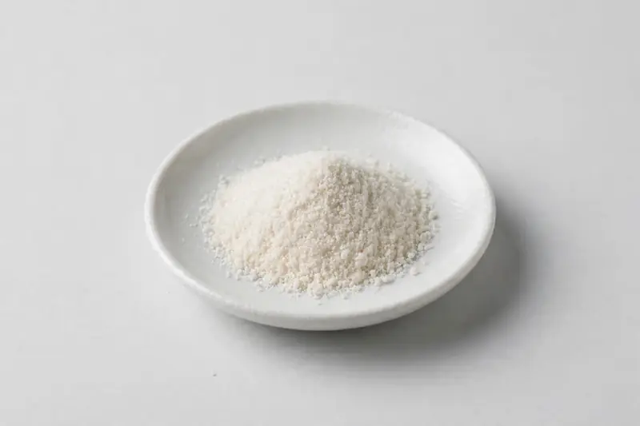

Huperzine A — Huperzia serrata-derived powder in 1% and 98%+ grades for cognitive and focus formulations.

Overview
Huperzine A is an alkaloid isolated from Huperzia serrata whole herb, traded mainly as a standardized extract at 1% or as a high-purity 98%+ powder. It appears in capsule and tablet concepts positioned around cognitive and focus support. As a Xi'an-based trading company sourcing through vetted partner producers, we work from the buyer's target grade and confirm feasibility honestly.
Specifications below reflect commonly requested options in the market — not a stock list. Share your target spec and we'll confirm exactly what we can supply, honestly.
| Specification | Details |
|---|---|
| Botanical identity | Huperzia serrata-derived Huperzine A powder |
| Marker compound | Huperzine A — commonly requested: 1% standardized extract, 98%+ high-purity grade |
| Appearance | White to off-white fine powder |
| Mesh size | Typically 80–100 mesh (confirm per inquiry) |
| Testing | COA/TDS arranged on request; scope agreed per your spec |
Applications
Documentation
We don't claim in-house labs or certifications we don't hold. COA and TDS documents can be arranged on request, and testing scope is agreed against your specification before supply.
FAQ
Related products
Arctium lappa
Key marker: 10:1 or inulin
View specs →Camellia sinensis (white tea)
Key marker: Tea polyphenols 20-40%
View specs →Berberis aristata
Key marker: Berberine
View specs →D-Mannose
Key marker: 99%+ purity
View specs →Inulin (Cichorium intybus)
Key marker: 90%+ inulin
View specs →Send your target spec and volumes — we'll respond with a tailored quotation.
Request a Quote